import arviz as az
import bambi as bmb
import matplotlib.pyplot as plt
import numpy as np
import pandas as pd
import preliz as pz
import seaborn as sns
import scipy.stats as stats
import xarray as xr
from cmdstanpy import CmdStanModel, disable_logging
disable_logging()
az.style.use("arviz-variat")
# We need to explicitly tell seaborn to use the style defined by
# matplotlib rcParams, otherwise it will override them.
import seaborn.objects as so
so.Plot.config.theme.update(plt.rcParams)
az.rcParams["stats.ci_prob"] = 0.95
plt.rcParams["figure.dpi"] = 75
SEED = 652312Sleep study: Prior specification and model checking
This notebook includes the code for the Bayesian Workflow book Chapter 17 Prior specification for regression models: Reanalysis of sleep study.
1 Introduction
Prior distributions are at the heart of Bayesian statistics and are mentioned as one of its defining features in almost all introductions. Yet, in practice, specifying priors remains a highly challenging and complex topic that tends to cause a lot of confusion for people having to deal with it. In this case study, we clarify some of this confusion by explaining the different purposes of priors and things that should be considered when specifying them.
Load packages
2 The sleep study data
We analyze the sleepstudy data set (Belenky et al. 2003) that is shipped with the R package lme4 (Bates et al. 2015). The dataset covers 18 people undergoing sleep deprivation (less than 3 hours of sleep per night) for 7 consecutive nights, with their average reaction times in milliseconds in a simple experiment.
Reasons for choosing the sleepstudy data set:
- Few variables all of which are easy to understand
- easy yet important multilevel structure
- sensible to express with both linear and generalized linear models
- non-trivial error distributions
- independent priors are sensible(ish) due to the small number of parameters
- well known to a lot of R users
Days 0-1 were adaptation and training (T1/T2), day 2 was baseline (B); sleep deprivation started after day 2. We drop days 0-1, and make the baseline to be new 0.
sleepstudy = bmb.load_data("sleepstudy")
sleepstudy = sleepstudy[sleepstudy["Days"] >= 2].copy()
sleepstudy["Days"] = sleepstudy["Days"] - 2.
sleepstudy["Subject"] = sleepstudy["Subject"].astype("category")
sleepstudy.head()| Reaction | Days | Subject | |
|---|---|---|---|
| 2 | 250.8006 | 0.0 | 308 |
| 3 | 321.4398 | 1.0 | 308 |
| 4 | 356.8519 | 2.0 | 308 |
| 5 | 414.6901 | 3.0 | 308 |
| 6 | 382.2038 | 4.0 | 308 |
Plot the data.
Code
subjects = sleepstudy["Subject"].unique()
n_subjects = len(subjects)
ncols = 6
nrows = int(np.ceil(n_subjects / ncols))
fig, axes = plt.subplots(nrows, ncols, sharex=True, sharey=True, figsize=(10, 6))
axes = axes.ravel()
for ax, subject in zip(axes, subjects):
idx = sleepstudy["Subject"] == subject
ax.plot(sleepstudy.loc[idx, "Days"], sleepstudy.loc[idx, "Reaction"], "o", alpha=0.7)
ax.set_title(f"Subject: {subject}", fontdict={"fontsize": 12})
for ax in axes[n_subjects:]:
ax.axis("off")
fig.text(0.5, 0, "Days", ha="center")
fig.text(0, 0.5, "Reaction time (ms)", va="center", rotation="vertical");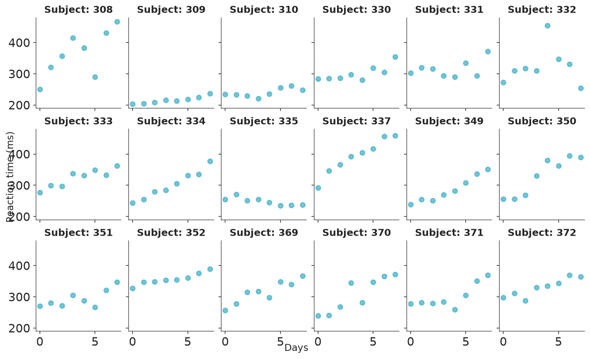
we create a convenience function to plot the posterior conditional effects of the models.
def plot_predictions(model, idata, model_name):
_plot = bmb.interpret.plot_predictions(model, idata, "Days", use_hdi=False)
plot = (
_plot
.add(so.Dot(color="k", marker="."), data=sleepstudy, x="Days", y="Reaction")
.label(
y="Reaction time (ms)",
title=model_name
)
)
plot.show()3 Simple linear model
Prior base.
prior_lin_base = {
"Intercept": bmb.Prior("Normal", mu=200, sigma=100),
"Days": bmb.Prior("Normal", mu=0, sigma=20),
"sigma": bmb.Prior("Exponential", lam=0.02),
}Model base and sample from the posterior.
mod_lin_base = bmb.Model(
"Reaction ~ Days",
sleepstudy,
priors=prior_lin_base,
)
idata_lin_base = mod_lin_base.fit(random_seed=SEED)
#mod_lin_base.compute_log_likelihood(idata_lin_base)
mod_lin_base.predict(idata_lin_base, kind="response", inplace=True, random_seed=SEED)Initializing NUTS using jitter+adapt_diag...
Multiprocess sampling (4 chains in 4 jobs)
NUTS: [sigma, Intercept, Days]Sampling 4 chains for 1_000 tune and 1_000 draw iterations (4_000 + 4_000 draws total) took 5 seconds.Posterior summary.
az.summary(idata_lin_base, var_names="~mu", kind="stats")| mean | sd | eti95_lb | eti95_ub | |
|---|---|---|---|---|
| sigma | 51 | 3.1 | 45 | 57 |
| Intercept | 270 | 7.7 | 250 | 280 |
| Days | 11 | 1.8 | 7.7 | 15 |
Posterior conditional effects.
plot_predictions(mod_lin_base, idata_lin_base, "Simple linear model")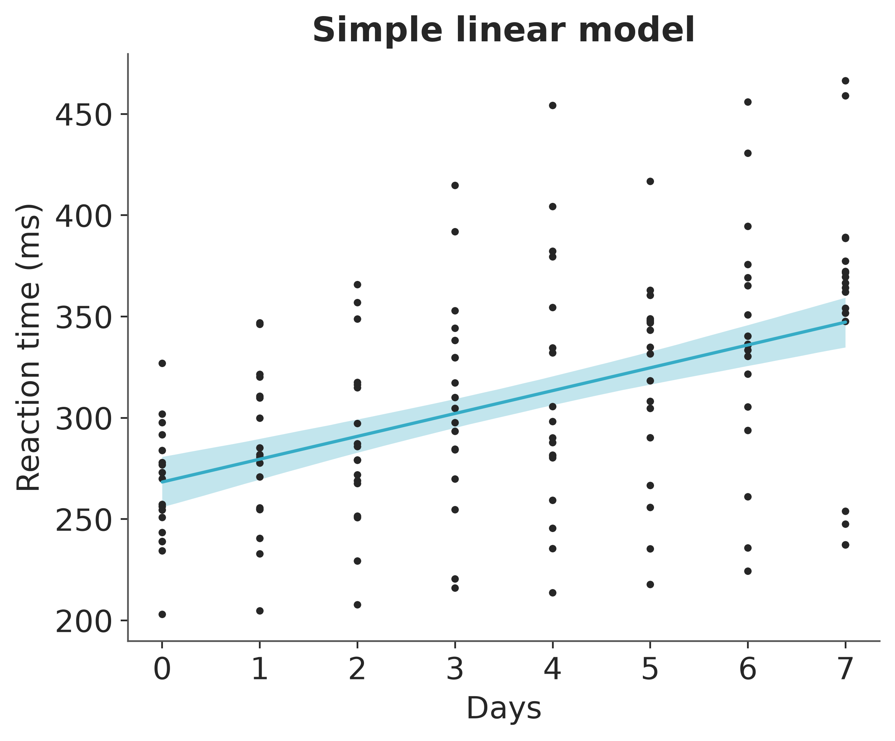
4 Simple linear model (centered predictors)
Points to discuss:
- priors on original or centered intercept?
- dependency of the prior on marginal moments of the data?
- different qualitative options for priors on b and sigma
Prior 1.
prior1 = {
"Intercept": bmb.Prior("Normal", mu=250, sigma=100),
"Days": bmb.Prior("Normal", mu=0, sigma=20),
"sigma": bmb.Prior("Exponential", lam=0.02),
}Sample from prior 1 (prior predictive checking).
mod1_prior = bmb.Model(
"Reaction ~ Days",
sleepstudy,
priors=prior1,
)
mod1_prior.build()
idata1_prior = mod1_prior.prior_predictive(draws=100, random_seed=SEED)Sampling: [Days, Intercept, Reaction, sigma]Prior predictive checking.
pc = az.plot_ppc_dist(idata1_prior, group="prior_predictive",
kind="ecdf",
)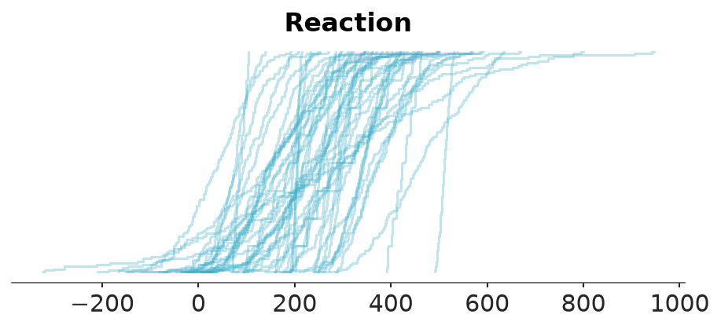
Model 1: sample from the posterior.
mod1 = bmb.Model(
"Reaction ~ Days",
sleepstudy,
priors=prior1,
)
idata1 = mod1.fit(random_seed=SEED)
mod1.predict(idata1, kind="response", random_seed=SEED)Initializing NUTS using jitter+adapt_diag...
Multiprocess sampling (4 chains in 4 jobs)
NUTS: [sigma, Intercept, Days]Sampling 4 chains for 1_000 tune and 1_000 draw iterations (4_000 + 4_000 draws total) took 4 seconds.Posterior summary.
az.summary(idata1, var_names="~mu")| mean | sd | eti95_lb | eti95_ub | ess_bulk | ess_tail | r_hat | mcse_mean | mcse_sd | |
|---|---|---|---|---|---|---|---|---|---|
| sigma | 51.18 | 3.12 | 46 | 58 | 6416 | 2819 | 1.00 | 0.039 | 0.028 |
| Intercept | 268.1 | 7.7 | 250 | 280 | 5864 | 2851 | 1.00 | 0.1 | 0.07 |
| Days | 11.35 | 1.86 | 7.6 | 15 | 5636 | 3010 | 1.00 | 0.025 | 0.018 |
Posterior conditional effects.
plot_predictions(mod1, idata1, "Simple linear model")Posterior predictive checking.
pc = az.plot_ppc_dist(idata1)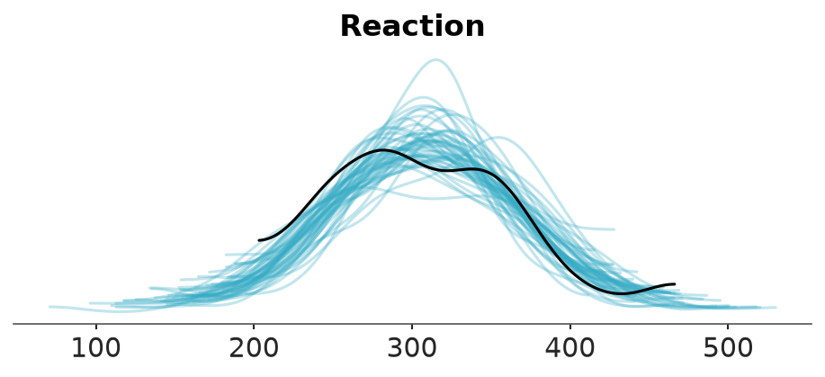
Prior sensitivity analysis.
mod1.compute_log_likelihood(idata1)
mod1.compute_log_prior(idata1)az.plot_psense_dist(idata1, var_names="~mu",
visuals={"dist":False}
)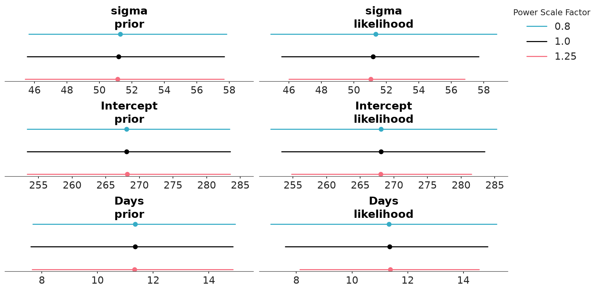
5 Simple linear model (informative priors)
Points to discuss:
- Priors will be influencing the posterior if chosen to be informative enough
- For models that are simple relative to the amount of data, prior distributions are unlikely to affect the posterior strongly, unless prior are very informative
Prior 2.
prior2 = {
"Intercept": bmb.Prior("Normal", mu=250, sigma=100),
"Days": bmb.Prior("Normal", mu=0, sigma=1),
"sigma": bmb.Prior("Exponential", lam=0.02),
}Model 2: sample from the posterior.
mod2 = bmb.Model(
"Reaction ~ Days",
sleepstudy,
priors=prior2,
)
idata2 = mod2.fit(random_seed=SEED)
mod2.predict(idata2, kind="response", random_seed=SEED)Initializing NUTS using jitter+adapt_diag...
Multiprocess sampling (4 chains in 4 jobs)
NUTS: [sigma, Intercept, Days]Sampling 4 chains for 1_000 tune and 1_000 draw iterations (4_000 + 4_000 draws total) took 4 seconds.Posterior summary.
az.summary(idata2, var_names="~mu", kind="stats")| mean | sd | eti95_lb | eti95_ub | |
|---|---|---|---|---|
| sigma | 55 | 3.4 | 49 | 62 |
| Intercept | 300 | 5.5 | 290 | 310 |
| Days | 2.3 | 0.92 | 0.4 | 4.1 |
Posterior conditional effects.
plot_predictions(mod2, idata2, "Model 2")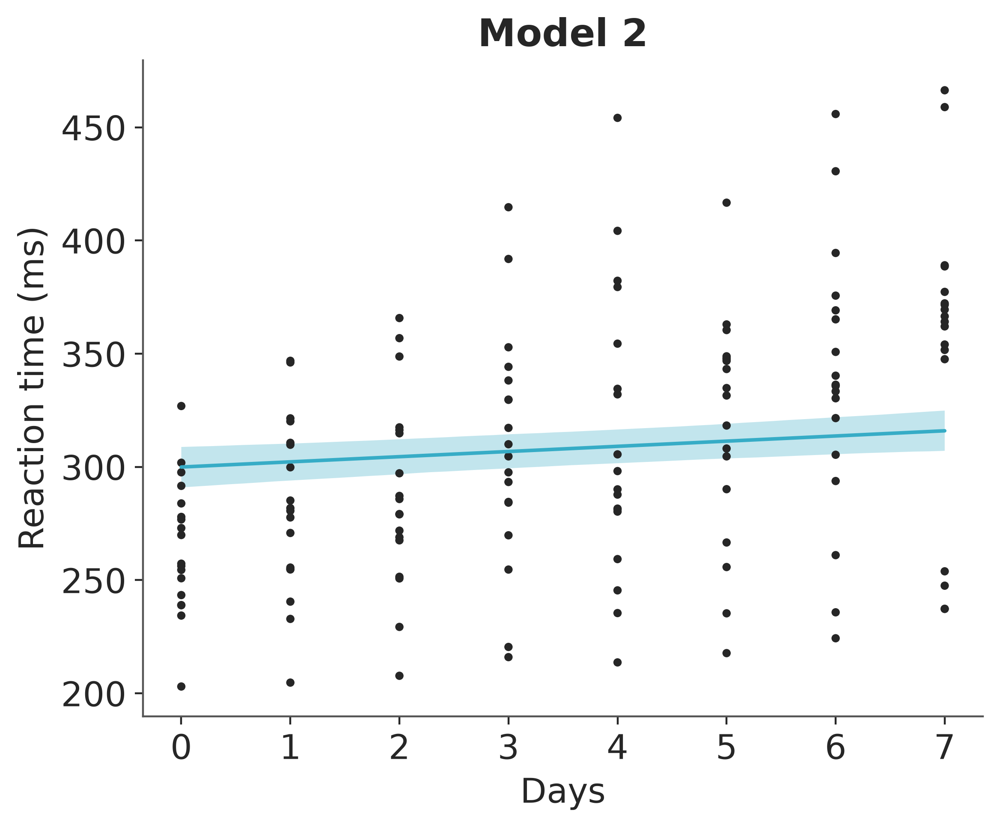
Prior sensitivity analysis.
mod2.compute_log_likelihood(idata2)
mod2.compute_log_prior(idata2)az.plot_psense_dist(idata2, var_names="~mu",
visuals={"dist":False}
)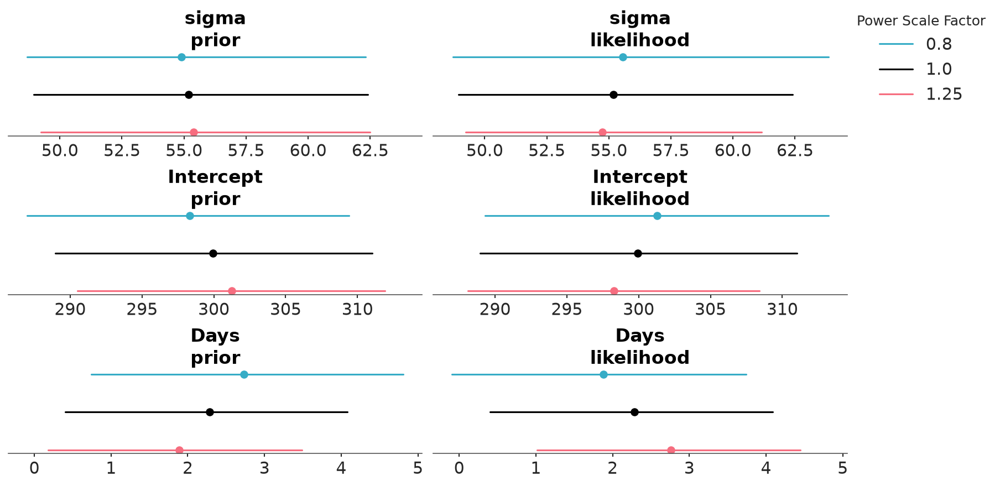
6 Simple linear model (informative priors with fat tails)
Points to discuss: - tails of the priors (normal vs. Student-t)
Prior 2b.
prior2b = {
"Intercept": bmb.Prior("Normal", mu=250, sigma=100),
"Days": bmb.Prior("StudentT", nu=7, mu=0, sigma=1),
"sigma": bmb.Prior("Exponential", lam=0.02),
}Model 2b: sample from the posterior.
mod2b = bmb.Model(
"Reaction ~ Days",
sleepstudy,
priors=prior2b,
)
idata2b = mod2b.fit(random_seed=SEED)
mod2b.predict(idata2b, kind="response", random_seed=SEED)Initializing NUTS using jitter+adapt_diag...
Multiprocess sampling (4 chains in 4 jobs)
NUTS: [sigma, Intercept, Days]Sampling 4 chains for 1_000 tune and 1_000 draw iterations (4_000 + 4_000 draws total) took 5 seconds.Posterior summary.
az.summary(idata2b, var_names="~mu")| mean | sd | eti95_lb | eti95_ub | ess_bulk | ess_tail | r_hat | mcse_mean | mcse_sd | |
|---|---|---|---|---|---|---|---|---|---|
| sigma | 51.77 | 3.14 | 46 | 58 | 4399 | 2895 | 1.00 | 0.048 | 0.036 |
| Intercept | 279.6 | 9.2 | 260 | 300 | 4506 | 2811 | 1.00 | 0.14 | 0.098 |
| Days | 8.08 | 2.38 | 2.9 | 13 | 4547 | 2704 | 1.00 | 0.036 | 0.026 |
Posterior conditional effects.
plot_predictions(mod2b, idata2b, "Model 2b")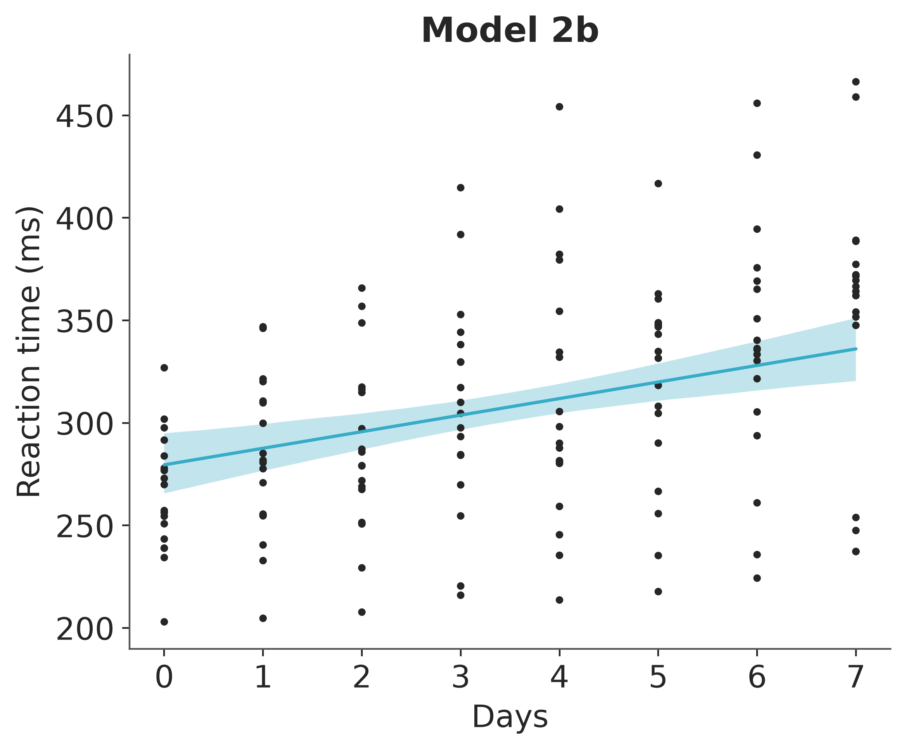
Prior sensitivity analysis.
mod2b.compute_log_likelihood(idata2b)
mod2b.compute_log_prior(idata2b)az.plot_psense_dist(idata2b, var_names="~mu",
visuals={"dist":False}
)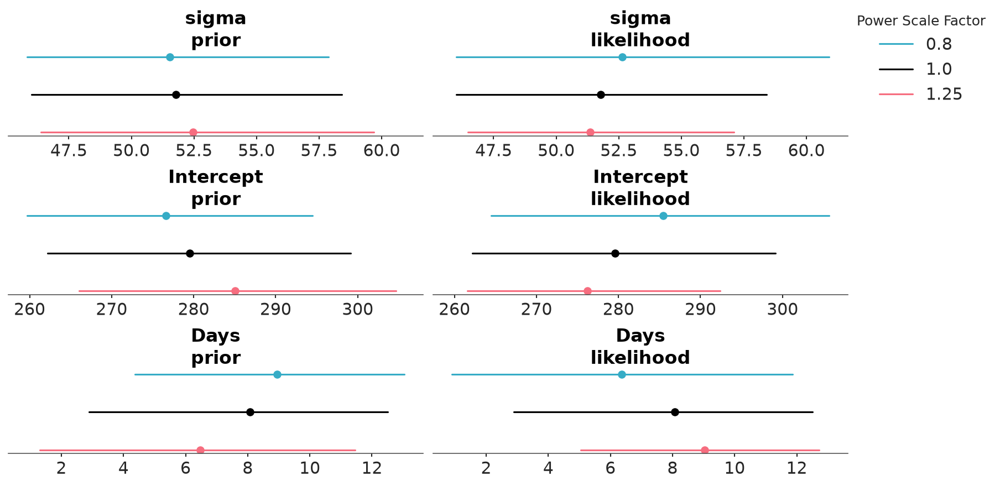
Illustrate difference between normal and Student-t prior.
pz.Normal(0, 1).plot_pdf()
pz.StudentT(7, 0, 1).plot_pdf()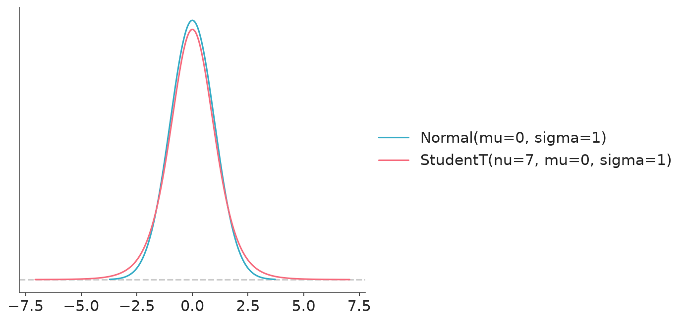
Compute CI-bound for an exponential prior.
pz.Exponential(0.02).ppf([0.025, 0.975])array([ 1.2658904 , 184.44397271])7 Linear varying intercept model
Points to discuss:
- How to represent unidimensional multilevel structures via priors
- priors on hyperparameters (SDs)
- shall the prior on sigma change now that we add more terms?
Prior 3.
prior3 = {
"Intercept": bmb.Prior("Normal", mu=250, sigma=100),
"Days": bmb.Prior("Normal", mu=0, sigma=20),
"sigma": bmb.Prior("Exponential", lam=0.02),
"1|Subject": bmb.Prior("Normal", mu=0, sigma=bmb.Prior("Exponential", lam=0.02)),
}Model 3: sample from the posterior.
mod3 = bmb.Model(
"Reaction ~ Days + (1 | Subject)",
sleepstudy,
priors=prior3,
categorical="Subject",
)
idata3 = mod3.fit(random_seed=SEED)
mod3.predict(idata3, kind="response", random_seed=SEED)Initializing NUTS using jitter+adapt_diag...
Multiprocess sampling (4 chains in 4 jobs)
NUTS: [sigma, Intercept, Days, 1|Subject_sigma, 1|Subject_offset]Sampling 4 chains for 1_000 tune and 1_000 draw iterations (4_000 + 4_000 draws total) took 8 seconds.
The rhat statistic is larger than 1.01 for some parameters. This indicates problems during sampling. See https://arxiv.org/abs/1903.08008 for details
The effective sample size per chain is smaller than 100 for some parameters. A higher number is needed for reliable rhat and ess computation. See https://arxiv.org/abs/1903.08008 for detailsPosterior summary.
az.summary(idata3, var_names=["~mu", "~1|Subject"])| mean | sd | eti95_lb | eti95_ub | ess_bulk | ess_tail | r_hat | mcse_mean | mcse_sd | |
|---|---|---|---|---|---|---|---|---|---|
| sigma | 30.44 | 1.94 | 27 | 34 | 2991 | 2494 | 1.00 | 0.035 | 0.026 |
| Intercept | 268 | 12 | 240 | 290 | 346 | 508 | 1.01 | 0.63 | 0.5 |
| Days | 11.37 | 1.09 | 9.3 | 14 | 2967 | 2505 | 1.00 | 0.02 | 0.015 |
| 1|Subject_sigma | 44.1 | 8.3 | 31 | 62 | 759 | 1290 | 1.00 | 0.3 | 0.31 |
Posterior conditional effects per subject.
_plot = bmb.interpret.plot_predictions(mod3, idata3, ["Days", "Subject"], use_hdi=False,
subplot_kwargs={"main": "Days", "panel": "Subject"},
fig_kwargs={"theme": {"figure.figsize": (12, 7)},
"title": "subject {}".format,
"wrap": 6,
})
plot = (
_plot
.add(
so.Dot(color="k", marker=".", artist_kws={"zorder": 0}),
data=sleepstudy,
x="Days",
y="Reaction",
col="Subject"
)
)
plot.show()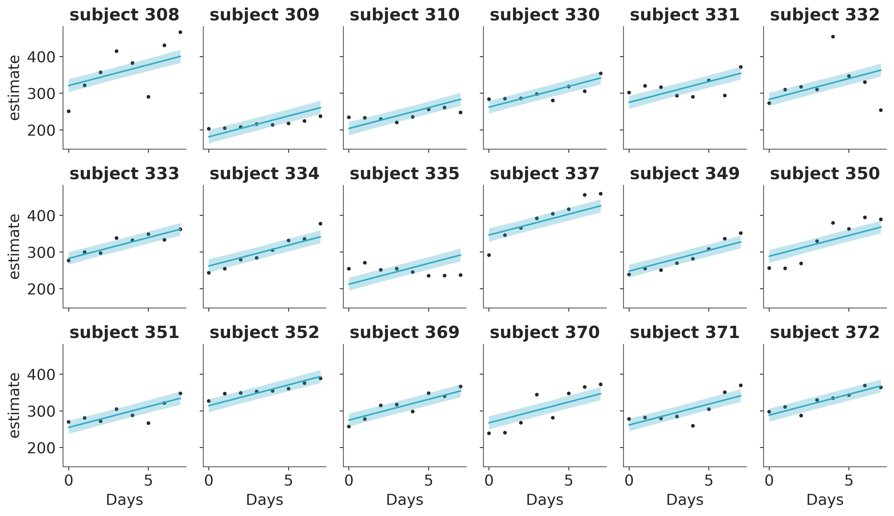
References
Bates, D., M. Maechler, B. Bolker, and S. Walker. 2015. “Fitting Linear Mixed-Effects Models Using Lme4.” Journal of Statistical Software 67: 1–48.
Belenky, G., N. J. Wesensten, D. R. Thorne, M. L. Thomas, H. C. Sing, D. P. Redmond, M. B. Russo, and T. J. Balkin. 2003. “Patterns of Performance Degradation and Restoration During Sleep Restriction and Subsequent Recovery: A Sleep Dose-Response Study.” Journal of Sleep Research 12: 1–12.